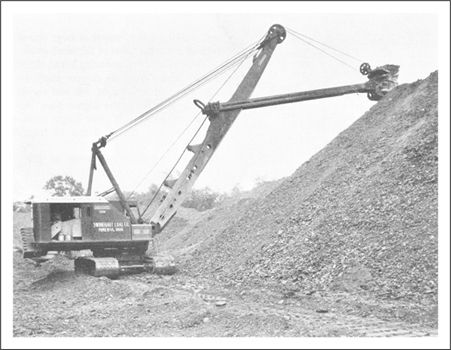
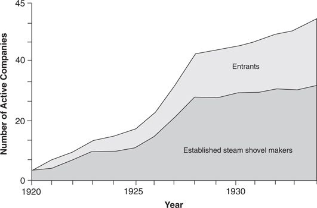

From William Smith Otis’ invention of the steam shovel in 1837 through the early 1920s, mechanical earthmoving equipment was steam-powered. A central boiler sent steam through pipes to small steam engines at each point where power was required in the machine. Through a system of pulleys, drums, and cables, these engines manipulated frontward-scooping buckets, as illustrated in Figure 3.1. Originally, steam shovels were mounted on rails and used to excavate earth in railway and canal construction. American excavator manufacturers were tightly clustered in northern Ohio and near Milwaukee.
In the early 1920s, when there were more than thirty-two steam shovel manufacturers based in the United States, the industry faced a major technological upheaval, as gasoline-powered engines were substituted for steam power. 2 This transition to gasoline power falls into the category that Henderson and Clark label radical technological transition. The fundamental technological concept in a key component (the engine) changed from steam to internal combustion, and the basic architecture of the product changed. Where steam shovels used steam pressure to power a set of steam engines to extend and retract the cables that actuated their buckets, gasoline shovels used a single engine and a very different system of gearing, clutches, drums, and brakes to wind and unwind the cable. Despite the radical nature of the technological change, however, gasoline technology had a sustaining impact on the mechanical excavator industry. Gasoline engines were powerful enough to enable contractors to move earth faster, more reliably, and at lower cost than any but the very largest steam shovels.
Figure 3.1 Cable-Actuated Mechanical Shovel Manufactured by Osgood General

Source: Osgood General photo in Herbert L. Nichols, Jr., Moving the Earth: The Workbook of Excavation (Greenwich, CT: North Castle, 1955).
The leading innovators in gasoline engine technology were the industry’s dominant firms, such as Bucyrus, Thew, and Marion. Twenty-three of the twenty-five largest makers of steam shovels successfully negotiated the transition to gasoline power. 3 As Figure 3.2 shows, there were a few entrant firms among the gasoline technology leaders in the 1920s, but the established firms dominated this transition.
Beginning in about 1928, the established manufacturers of gasoline-powered shovels initiated the next major, but less radical, sustaining technological transition—to shovels powered by diesel engines and electric motors. A further transition, made after World War II, introduced the arched boom design, which allowed longer reach, bigger buckets, and better down-reaching flexibility. The established firms continued to embrace and succeed with each of these innovations.
Figure 3.2 Manufacturers of Gasoline-Powered Cable Shovels, 1920–1934

Source: Data are from the Historical Construction Equipment Association and from The Thomas Register, various years.
Excavation contractors themselves actually pioneered a number of other important sustaining innovations, first modifying their own equipment in the field to make it perform better and then manufacturing excavators incorporating those features to sell to the broader market. 4